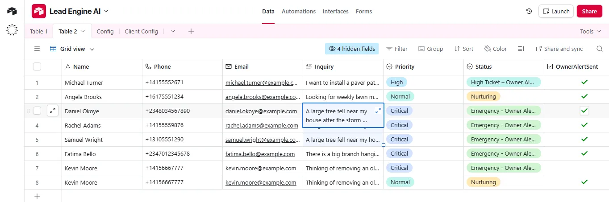

Automated Lead Management System for Landscaping Businesses.
How I built a triage engine that guarantees instant, intelligent responses to every lead, eliminating the risk of missed emergencies and lost high-value projects.
Technical Brief
Free 15-min logic mapping session
Overview
Landscaping companies serving multiple neighborhoods often deal with a chaotic mix of customer inquiries every day. Some leads are routine lawn mowing requests, while others are urgent situations involving fallen trees or high-value hardscaping projects.
This project focused on building a reliable "Digital Intake & Dispatch" system that acts as a filter for the business. It helps owners respond faster, prioritize effectively, and avoid missing high-value or urgent jobs, ensuring the owner only focuses on what truly matters.
01 The Problem: Anxiety & Inconsistency
For many landscaping businesses, all inquiries end up in the same place, regardless of urgency or job size. Leads from Google search, local service ads, Facebook ads, and website forms are handled manually.
This creates a bottleneck where:
- Urgent tree removal requests get delayed.
- High-value hardscaping projects receive slow responses.
- Owners spend time sorting messages instead of running the business.
- Emergencies are handled inconsistently.
The business needed a way to understand each inquiry and take the right action immediately, automatically.
The Risk: Manual triage is slow and error-prone. A missed emergency call can destroy a reputation; a missed hardscaping lead can destroy revenue.
02 The Solution: Three Lanes of Service
I designed a custom lead automation system that acts as a digital intake and dispatch assistant for landscaping companies. When a new inquiry is submitted, the system:
Captures & Stores the lead in a structured CRM (Airtable) immediately.
Analyzes the inquiry text to determine urgency and service type using logic.
Routes the lead into the correct workflow path automatically.
Notifies the owner only when direct attention is absolutely required.
The system categorizes leads into three primary groups:
Lane 1: Emergency (Tree/Storm)
Action: Overrides phone mute. Sends SMS alarm to Owner + Manager. Auto-replies to customer: "We received your emergency alert."
Lane 2: Project (Patio/Hardscape)
Action: Flags lead as "Priority" in CRM. Sends "Digital Foreman" email asking about materials (Pavers vs. Stone) to qualify lead instantly.
Lane 3: Routine (Mowing)
Action: Fully automated. Sends standard quote questionnaire. Owner is not disturbed.

Figure 1: The "Digital Foreman" Triage Logic

Figure 2: The Structured Lead Database (Airtable)
03 Built-In Escalation & Control
For emergency situations, I engineered a safety net. If an urgent lead is not acknowledged within a 15-minute window, the system triggers a secondary Escalation Layer (SMS to backup manager) to ensure nothing is missed.
Manual control fields in the CRM allow the business to:
- Mark when the owner has taken action.
- Stop the escalation timer immediately.
- Track lead status clearly inside the CRM.

{
"process": "EMERGENCY_ESCALATION",
"trigger": "Lead_Labeled_Urgent",
"monitoring_loop": {
"wait_time": "900000", // 15 Minutes
"check_status": "Airtable_Field('Owner_Ack') == TRUE",
"on_success": "End_Workflow",
"on_fail": {
"action": "TRIGGER_BACKUP_CALL",
"recipient": "Shop_Manager_Cell",
"message": "URGENT: Owner has not responded to Tree Emergency #1042."
}
}
}
Simulated logic of the Escalation Safety Net.
The Result: This prevents false alarms (waking up the staff) while ensuring 100% protection against missed emergencies.
04 The Impact
Try the Logic Live
Simulate a customer coming from Google Ads. Type an emergency keyword (e.g., "Tree fell") to see the system react.
Traffic Source
Simulating Mobile Google Search
Want this exact system for your business?
Stop missing leads and start sleeping better. I will map out your current chaos and design a custom "Digital Foreman" for you.
Book a 15-Min Logic Mapping Call